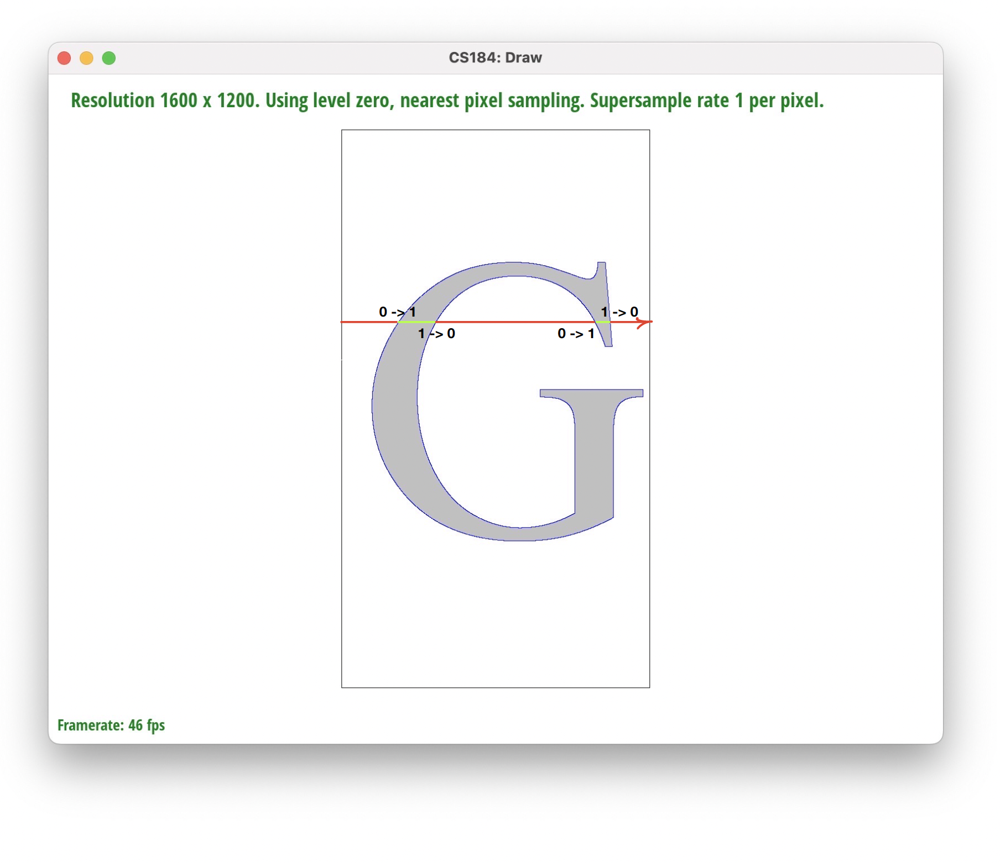

CS 184: Computer Graphics and Imaging, Spring 2022
Final Project Report: Font Rendering
Rui Wang, Zhuowen Chen, Yifan Zhong, Yicheng Sun
Abstract
In the final project, we implemented font rendering.
At first, what we do is to use package FreeType 2 to read information about a font style from a
.ttf file. Then we read contours, points (control and non-control) from the FACE object
for each glyph in the font. Then, we store the contours (constituted by the points) as < path >
elements in an svg file. This was finished in the milestone.
Then, we need to parse the svg file and render this svg into image. In order to accomplish this
work, we mainly used staff code from project 1. But we added an SVGElement object called
Path. We modified the codes in svgparser and svg (both the head and .cpp) to
accomodate this change. The Path::draw function will call functions that we added in
RasterizerImp to rasterize the lines and curves in the Path.
Technical Approach
The first part of this project is to convert a TTF font format into an SVG file, as SVG files support Bezier curves.
Therefore, the first challenge we met is to understand what TTF files are composed of, and how do we generate a specific given character into a glyph that TTF font presents.
And here, we found a free, well-documented software called FreeType. FreeType not only has documented how to use its tool, but also provided tutorials that are detailed and vivid enough for us to understand what a font is, and what elements does a font have. Here, we learned that foundamentally a font is composed of glyphs, which can be understood as forms of characters. Each glyph has its own metrics, such as bearingX, bearingY, xMin, xMax and so on, as the diagram shown below. More information about glyph metrics can be learned here.
To support mulitple characters, one essential metric we need to use is the advance. Every time we finish drawing a character, we will offset the next character by the advance value that the last character has. By doing so, every character in a line can be drawn without overlapping with each other.
A glyph may be made up of zero (for exmaple, a space) or multiple contours, where each contour is made up of many points. Some points make quadratic Bezier curves, and some make straight lines. Whether a point is a part of a Bezier curve, or a stright line, can be inferred from the tag interface provided by FreeType. These points in a contour are then put into a "path" element in the SVG, where a "path" can also contain multiple Bezier curves and straight lines, well fitting the "contour" concept in a TTF.
TTF defines that contours that need to be filled in inside must be clockwise, and contours that need to be filled in outside must be counterclockwise. But SVG will fill a contour if a pixel can to through odd number of contours to the "outside world", else will not fill, and therefore the orientation will not matter in the conversion.
In the process of converting TTF to SVG, we found an interesting fact that, the TTF count the bottom as y = 0, while SVGs count the top as y = 0, and we therefore have to flip the y values for every point.
The rasterization part is rather similar to Project 1 in CS 184. We are also inspired by Project 4, where we test if a point would go pass a surface by testing if "this" point and the last point are in different sides of the surface.
We know that a linear Bezier curve can be expressed using the follow formula:
And therefore, a quadratic Bezier curve can be expressed using:
By rearranging the formula, we can express a quadratic Bezier curve in:
Where t can the expressed in:
Because every vector here is a (x, y)-form coordinate, for a given y value, we can easily get its t value:
Plugging in the t value we get, we can get the coorresponding x value.
Getting the x value given a y value for lines are way simpler, and for the purpose of conciseness, we will not show the process here.
Now, we can do the regular rasterization routine. For a y coordinate on the screen, we move from x = 0 to x = WIDTH - 1, calculating how many contours we are will be passing from x - 1 to x (or if we are using supersampling, the 1s can be other values). If we are going pass odd number of contours in this move, we will flip the fill flag, which indicates whether we will fill this pixel or not:

But simply drawing the contours does not need the complex procedures above. Using de Casteljau's algorithm, we iterate from t = 0 to 1, and fill every pixels that covers the resulting coordinate. We automatically choose a step so that no two consecutive pixels can be away from the others with a distance more than sqrt(2) (distance for diagonal pixels).
We did not go directly into this method. Our previous version draw the contours first, and tests if we will be going pass a pixel we have drawn before, to flip the flag. This method does not work if there exists horizontal lines in the pixel world, where there can be either odd or even number of flips when going pass them. We first thought of solving this by counting horizontally contiguous pixels as one single flip, but this will not work if we have a curve that "touches" the top or the bottom with two horizontally contiguous pixel resulted by "jaggies". Consider we have y = x^2, and near y = 0, there could be two or more pixels as there are sampling artifacts. This specific situation should be counted as two or no flips, but one flip is counted here with this method. We therefore discarded this "discrete" method and adopted the more "continuous" method described above.
In the final presentation, our version was very slow when filling pixels. This was because we decided whether or not to flip the flag in every pixel, by calculating every curve and line's x value at that y value every time, and even worse, every pixel must construct the vectors from zero because we were not using pointers. Later on, we used vector pointers to avoid redundant constructing, and cached number of flips needed for each (x, y) pair at the beginning. A curve with end points from x0 to x1 does not need to be calculated when x is less than x0 or more than x1 too (assume x0 < x1). Also, we utilized the idea of bounding boxes to save a huge amount of works. After these changes, the rasterizer can finish displaying a long sentence in a time that is even hard to perceive.
What are the lessons that we learned?
-
We have learned what information the .ttf files hold for each font: the face of the glyph,
in the face, there are contour of the glyph and the contours are constituted of the points (control
or non-control) of the Bezier curves and lines in the contours.
-
We learned how to fill a close set of Bezier curves using a fliping flag. After this project, we were
able to evaluate the boundary of an rendered 2d object and accurately fill the internal area of an object.
-
We have also learned an effective way (maybe not only way) to parse SVG files into SVG objects in
memory that we can use to render fonts.
-
Besides, we also learned how to find references about a project that we have
little knowledge about. The official documents are very helpful for us to understand technical
details.
Results
First, to illustrate that the contours are made up of multiple Bezier curves and straight lines,
let us show a picture of "abc" rendered with only contours and points on each contour (colorful contours and points):
Bezier curves and their control points are in the same color for illustrating purpose.
In the following frame, we show images for each upper case letter in Debrosee font (please click
on the button to see the corresponding letter):
We can also render other font styles like "Times New Roman" or "Arial". The following images are
"B" and "R" rendered by our solution in Times New Roman font:
We can also render a sentence! The following is a sentence "Happy Font Rendering !!" rendered
with arial font (arial.ttf):
"Happy Font Rendering !!"
References
Contribution
| Name
| Contribution
|
| Rui Wang |
Actively engaged in algorithm discussion, coding, and webpage edit. |
| Zhuowen Chen |
Actively engaged in reference search, algorithm discussion, coding, and webpage edit. |
| Yifan Zhong |
Actively engaged in learning online resources and algorithm discussion, coding, and webpage build. |
| Yicheng Sun |
Actively engaged in reference search, algorithm discussion. |